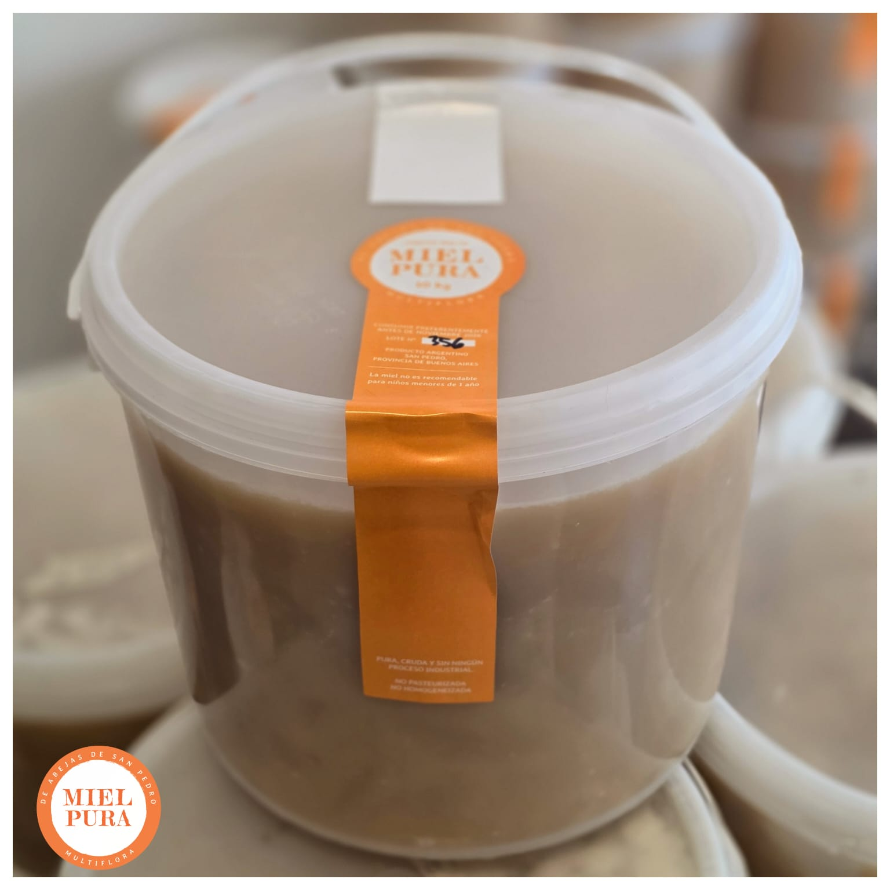
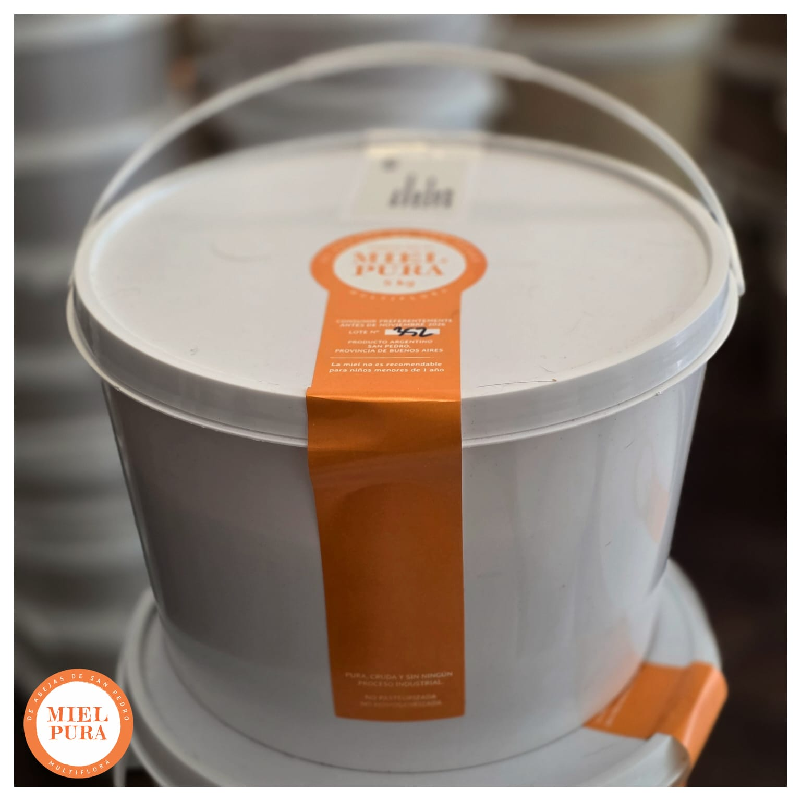
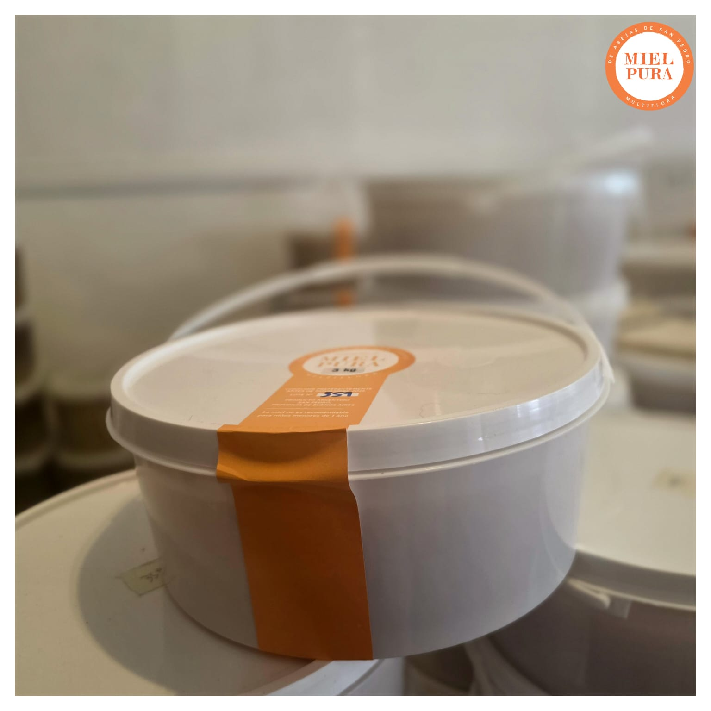
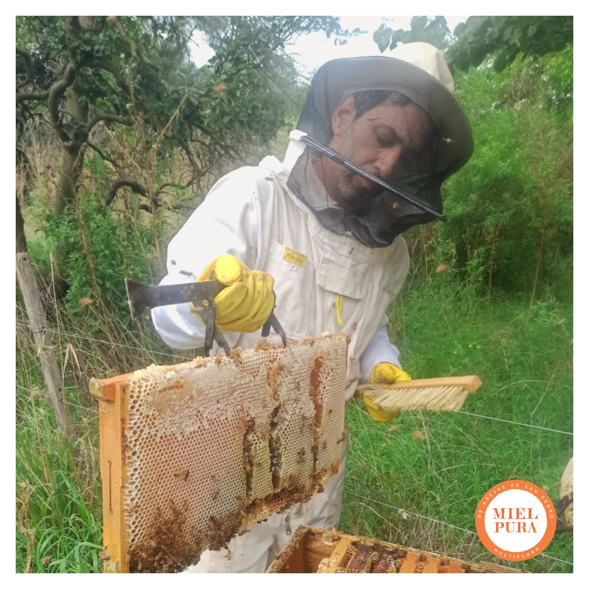
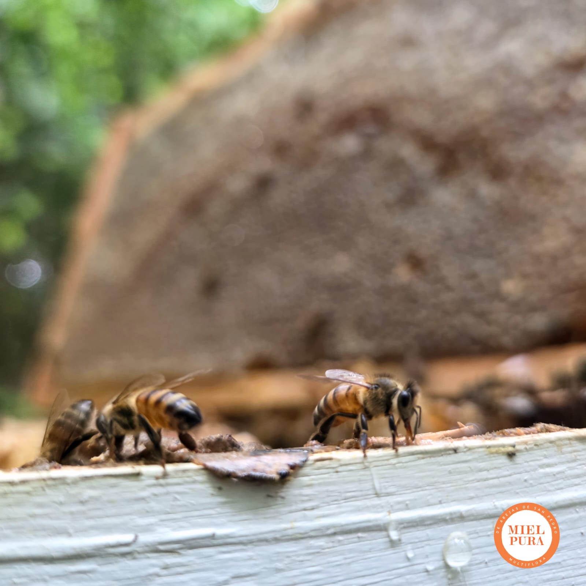
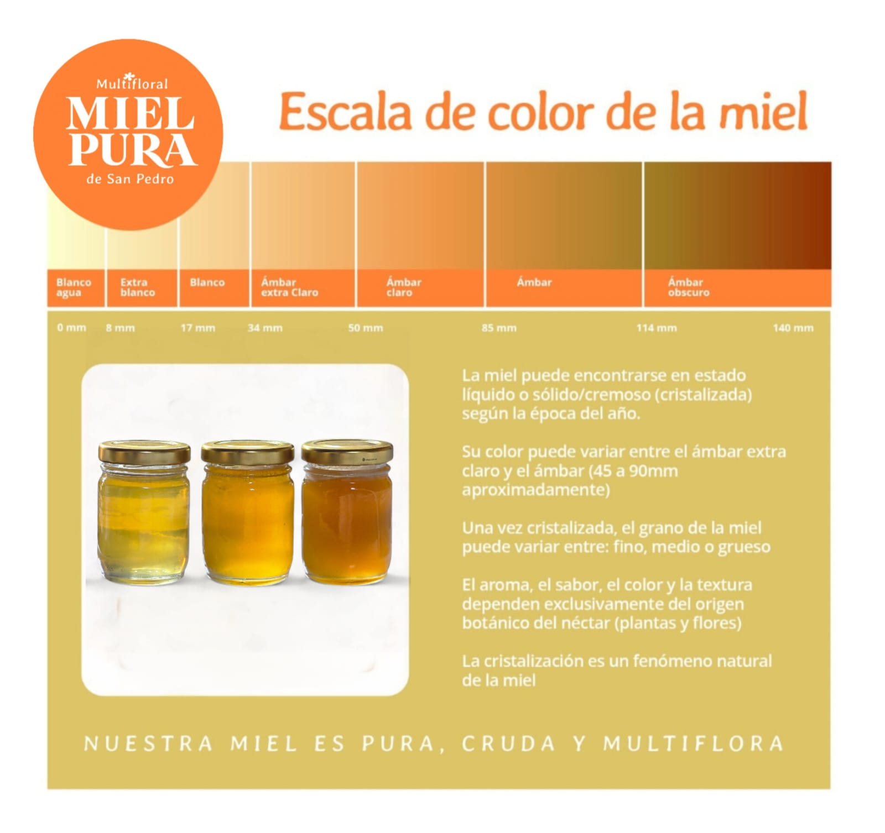
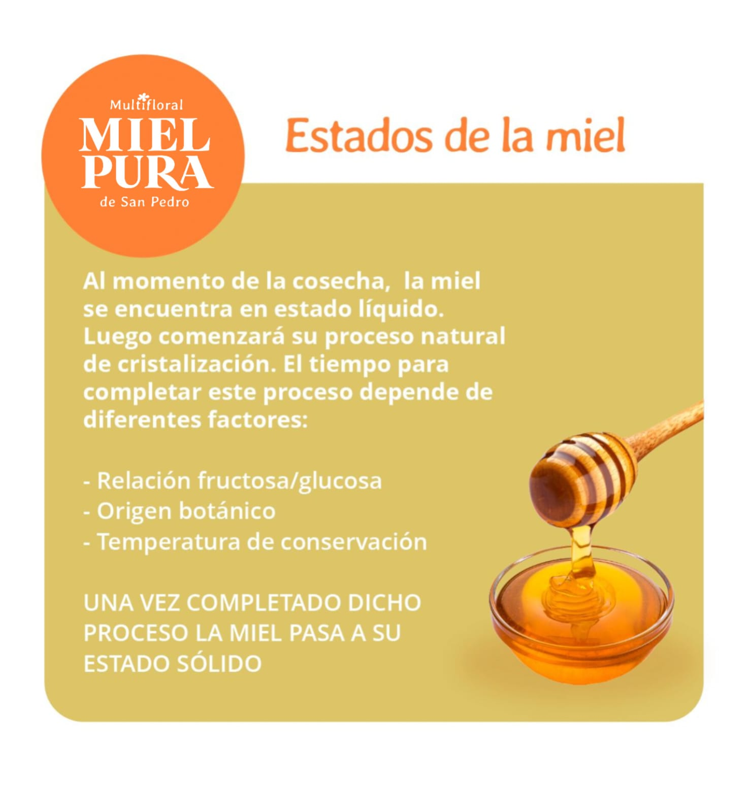
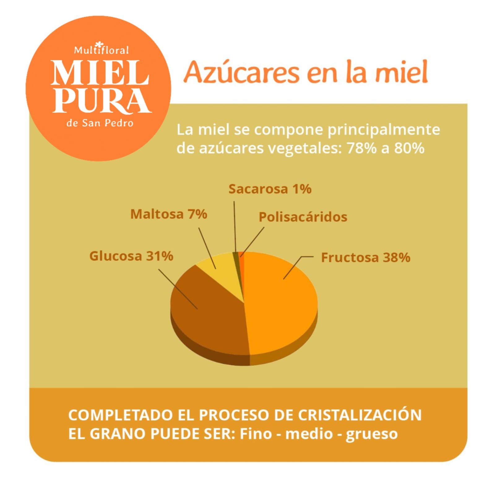

Balde 3 kg
Ideal para probar la calidad de nuestra miel y para hogares que consumen poca cantidad.
ConsultarApicultores de San Pedro, Buenos Aires
Cosechada a mano por nuestras abejas. Sin pasteurizar, sin homogeneizar, sin procesos industriales. Tal como la naturaleza la entrega.

100% naturalNuestros productos
Elegí el tamaño que necesitás. Enviamos a domicilio a todo el país.

Ideal para probar la calidad de nuestra miel y para hogares que consumen poca cantidad.
Consultar
El equilibrio justo para familias que usan miel a diario en desayunos y preparaciones.
ConsultarPara los que no se quieren quedar sin miel. Perfecto para compartir o repostería frecuente.
Consultar

Nuestra historia
Somos apicultores de la provincia de Buenos Aires, Argentina. Trabajamos nuestras colmenas con respeto por los tiempos de la naturaleza y por el bienestar de las abejas, para obtener una miel pura, cruda y multifloral como pocas.
Una vez extraída del panal, la miel se filtra y decanta para eliminar impurezas. Después, se envasa sin pasteurizar ni homogeneizar, conservando intactas sus vitaminas, enzimas, antioxidantes y minerales.
Para saber más
La escala más utilizada para medir el color de la miel es la escala Pfund. Clasifica la miel desde muy clara hasta muy oscura, midiendo los milímetros Pfund con un colorímetro o comparador visual.
Nuestra miel se ubica entre los 45 y 90 mm Pfund, del ámbar extra claro al ámbar.

Al momento de la cosecha la miel se encuentra en estado líquido. Luego comienza su proceso natural de cristalización.
Una vez completado el proceso, la miel pasa a su estado sólido. La cristalización es un fenómeno natural.

La miel se compone principalmente de azúcares vegetales (78% a 80%). En nuestra miel multifloral predominan la fructosa y la glucosa.

La miel cruda es aquella que, una vez elaborada por las abejas a partir del néctar de las flores y tras el filtrado y decantado por parte del apicultor para eliminar impurezas, no ha sido procesada ni tratada (pasteurizada) de ninguna manera una vez sacada del panal.
Por eso mantiene todas sus propiedades nutricionales: vitaminas, enzimas, antioxidantes y minerales. Al no homogeneizar, cada varietal conserva su propio sabor, aroma, color y textura, definidos por el origen botánico del néctar.
Detrás del proceso
De la colmena al balde: un oficio de toda la vida.
Hablemos
Envíos a domicilio a todo el país. Escribinos por WhatsApp y te respondemos a la brevedad.
+54 11 3473-6741